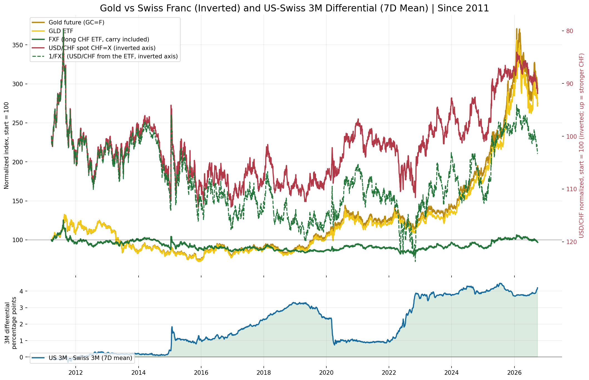
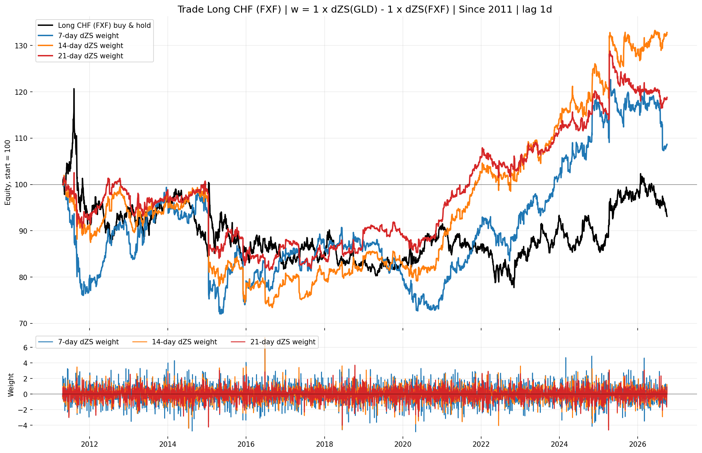
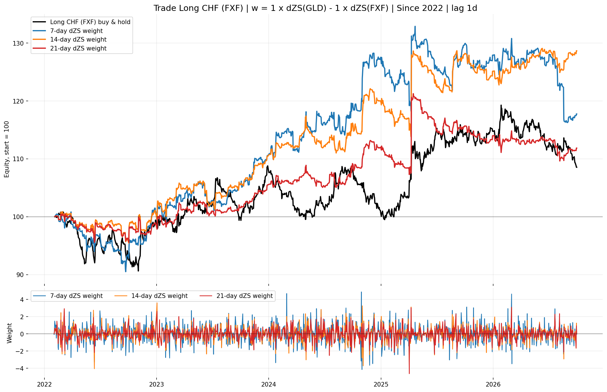
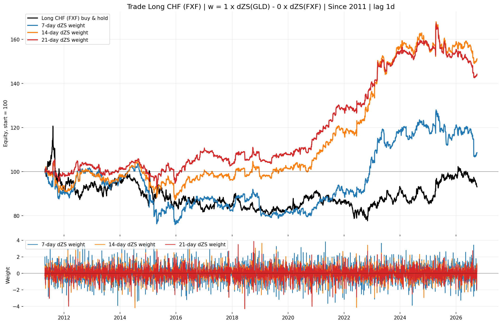
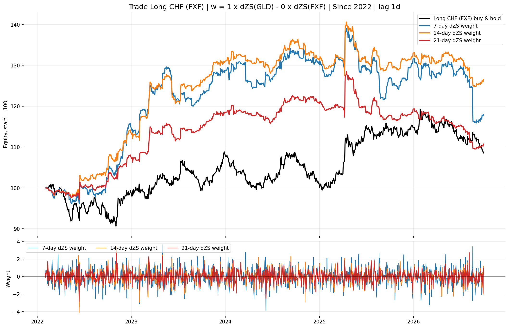
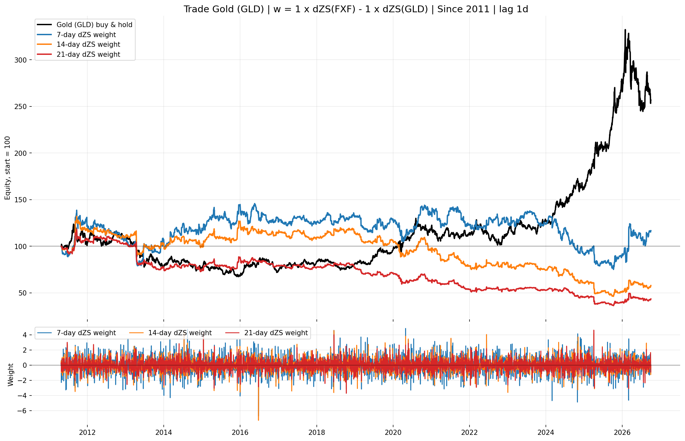
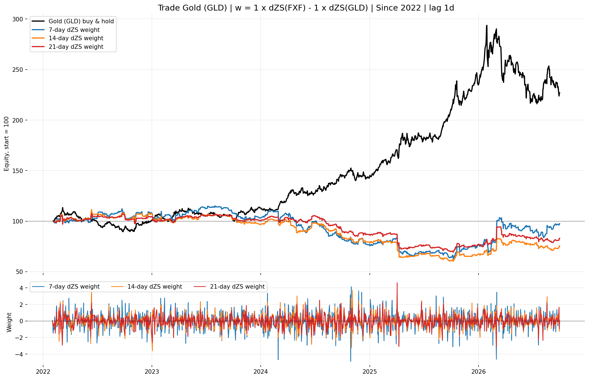
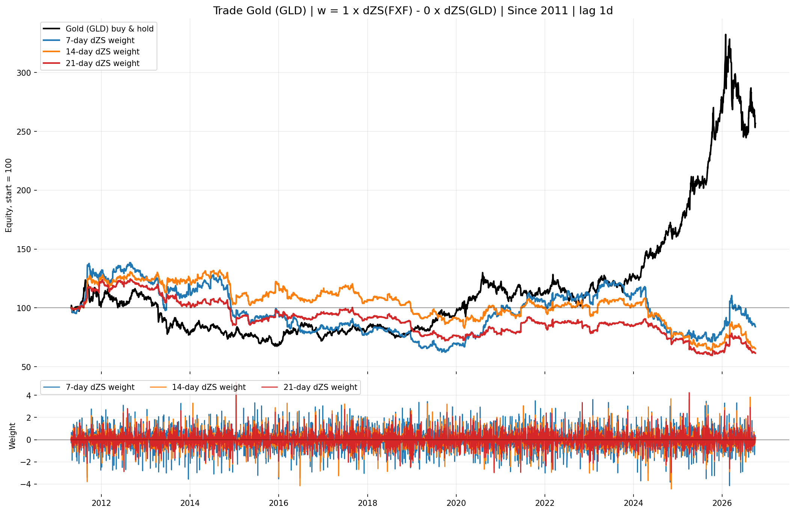
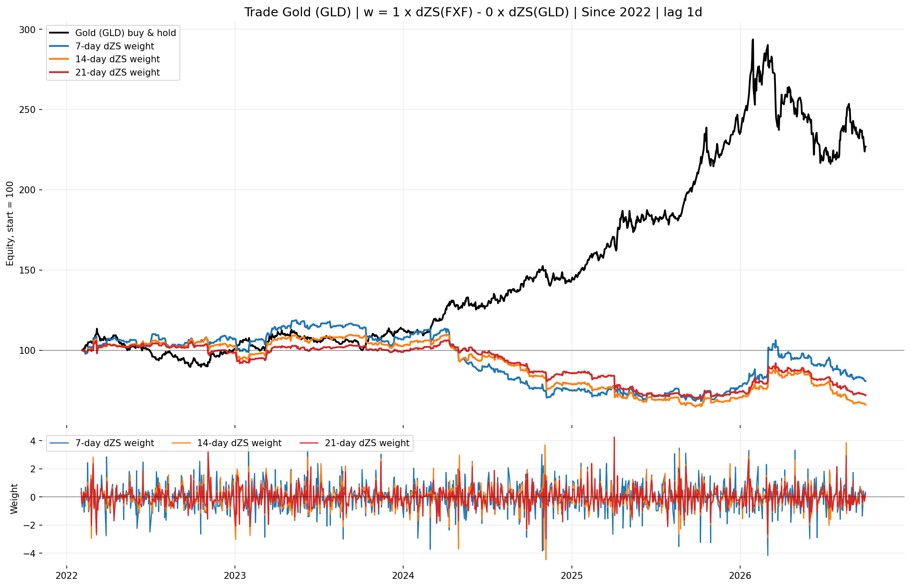

- We compare Gold and the Swiss franc (CHF): the two are visually correlated (first chart).
- Does Gold predict CHF? Yes, to some extent. Trading FXF (the CHF ETF) on the gold signal beats simply holding FXF: Sharpe about 0.4 versus 0.0 since 2011, and 0.7 versus 0.24 since 2022.
- Does CHF predict Gold? No. Trading GLD on the CHF signal does worse than simply holding GLD.
- Watch the fees: the edge is thin and the strategy trades every day. It stops working at roughly 1 to 2 bp of cost per trade (break-even about 1.4 bp since 2011, about 1.8 to 2.7 bp since 2022).
GC=F, a stitched nearby COMEX gold-futures quote,
normalized to 100 at the common starting date. The yellow line is the GLD ETF,
which tracks it closely but closes at 16:00 New York.
CHF=X is USD/CHF. Its chart axis is inverted, so an
upward red line represents a stronger franc. The green line is FXF, the
long-CHF ETF (carry included); the dashed green line is 1/FXF on the
same inverted axis, for comparison with spot.
Initial comparison
The top panel deliberately mirrors the earlier TLT-USO chart: gold is on the left axis and USD/CHF is on an inverted right axis. The lower panel keeps the interest-rate differential separate because it is a yield spread, not a price.

US_3M identifier with the recent
United States_3M continuation. The green line is the normalized
FXF ETF; the dashed green line is 1/FXF on the inverted axis.
First observations
- Gold and CHF strength share some broad defensive episodes, but their paths are not equivalent.
- The US 3M yield has generally remained above the Swiss 3M yield, especially from 2022 onward.
- Gold rose strongly alongside a wide positive US-Swiss carry differential, so the spread alone cannot explain gold's level.
- The carry-adjusted CHF investment can materially lag the visual inverted USD/CHF line when the US rate advantage is large.
- The relationship appears regime-dependent and should be tested on changes or returns, not inferred from two trending price levels.
Delta-Z-score backtest on GLD and FXF
ZS_N is the N-day rolling z-score of log prices, N = 7, 14, 21, and
dZS_N its daily change. Both ETFs trade on NYSE Arca and close at
16:00 New York, so signals and returns are synchronized; FXF's NAV already accrues
CHF deposit interest. The weight at the close of day t is applied to the next day's
return; zero costs unless stated.
Gold >> CHF: trade FXF
w(t) = +( dZS_N(GLD,t) - dZS_N(FXF,t) )

> CHF, trade FXF, since 2011.">
> CHF, trade FXF, since 2022.">| Since 2011 | End equity | CAGR | Sharpe | Sharpe @ 1 bp | Max DD |
|---|---|---|---|---|---|
| FXF buy & hold | 93 | -0.5% | 0.00 | 0.00 | -36% |
| 7-day | 109 | 0.5% | 0.10 | -0.20 | -29% |
| 14-day | 133 | 1.9% | 0.26 | -0.03 | -28% |
| 21-day | 119 | 1.1% | 0.19 | -0.08 | -21% |
| Since 2022 | End equity | CAGR | Sharpe | Sharpe @ 1 bp | Max DD |
|---|---|---|---|---|---|
| FXF buy & hold | 108 | 1.7% | 0.24 | 0.24 | -10% |
| 7-day | 117 | 3.5% | 0.40 | 0.08 | -13% |
| 14-day | 129 | 5.6% | 0.66 | 0.39 | -7% |
| 21-day | 112 | 2.4% | 0.34 | 0.10 | -10% |
Gold >> CHF with lambda = 0: trade FXF on the gold signal alone
w(t) = +( dZS_N(GLD,t) - 0 x dZS_N(FXF,t) )

> CHF, trade FXF, lambda = 0, since 2011.">
> CHF, trade FXF, lambda = 0, since 2022.">| Since 2011 | End equity | CAGR | Sharpe | Sharpe @ 1 bp | Max DD |
|---|---|---|---|---|---|
| FXF buy & hold | 93 | -0.5% | 0.00 | 0.00 | -36% |
| 7-day | 108 | 0.5% | 0.10 | -0.22 | -27% |
| 14-day | 151 | 2.7% | 0.40 | 0.11 | -17% |
| 21-day | 144 | 2.4% | 0.42 | 0.13 | -15% |
| Since 2022 | End equity | CAGR | Sharpe | Sharpe @ 1 bp | Max DD |
|---|---|---|---|---|---|
| FXF buy & hold | 108 | 1.7% | 0.24 | 0.24 | -10% |
| 7-day | 118 | 3.6% | 0.44 | 0.12 | -17% |
| 14-day | 127 | 5.2% | 0.70 | 0.43 | -11% |
| 21-day | 111 | 2.2% | 0.37 | 0.10 | -15% |
CHF >> Gold: trade GLD
w(t) = +( dZS_N(FXF,t) - dZS_N(GLD,t) )

> Gold, trade GLD, since 2011.">
> Gold, trade GLD, since 2022.">| Since 2011 | End equity | CAGR | Sharpe | Sharpe @ 1 bp | Max DD |
|---|---|---|---|---|---|
| GLD buy & hold | 262 | 6.4% | 0.46 | 0.46 | -46% |
| 7-day | 118 | 1.1% | 0.15 | -0.01 | -48% |
| 14-day | 59 | -3.4% | -0.16 | -0.32 | -65% |
| 21-day | 44 | -5.2% | -0.33 | -0.48 | -69% |
| Since 2022 | End equity | CAGR | Sharpe | Sharpe @ 1 bp | Max DD |
|---|---|---|---|---|---|
| GLD buy & hold | 227 | 19.3% | 1.01 | 1.01 | -26% |
| 7-day | 97 | -0.6% | 0.08 | -0.06 | -46% |
| 14-day | 75 | -5.9% | -0.27 | -0.41 | -46% |
| 21-day | 83 | -4.0% | -0.19 | -0.31 | -36% |
CHF >> Gold with a zero GLD coefficient: trade GLD on the FXF signal alone
w(t) = +( dZS_N(FXF,t) - 0 x dZS_N(GLD,t) )

> Gold, trade GLD, GLD coefficient = 0, since 2011.">
> Gold, trade GLD, GLD coefficient = 0, since 2022.">| Since 2011 | End equity | CAGR | Sharpe | Sharpe @ 1 bp | Max DD |
|---|---|---|---|---|---|
| GLD buy & hold | 262 | 6.4% | 0.46 | 0.46 | -46% |
| 7-day | 84 | -1.1% | 0.01 | -0.16 | -55% |
| 14-day | 65 | -2.7% | -0.14 | -0.30 | -52% |
| 21-day | 61 | -3.1% | -0.22 | -0.38 | -52% |
| Since 2022 | End equity | CAGR | Sharpe | Sharpe @ 1 bp | Max DD |
|---|---|---|---|---|---|
| GLD buy & hold | 227 | 19.3% | 1.01 | 1.01 | -26% |
| 7-day | 81 | -4.5% | -0.14 | -0.28 | -43% |
| 14-day | 66 | -8.5% | -0.48 | -0.62 | -41% |
| 21-day | 72 | -6.8% | -0.44 | -0.57 | -34% |
GC=F, CHF=X and a carry proxy looked
strong, but that came from Yahoo's USD/CHF being stamped about one day after gold.
Data construction
Rates come from market_dashboard.bond_yield_history_daily.
Switzerland_3M begins on 24 March 2011. The historical US series
US_3M ends on 14 September 2026 and is continued with
United States_3M from 15 September 2026. Both source tables and
market prices are saved locally before plotting.
Instruments
The top chart shows the gold future (GC=F) next to the GLD ETF, and
the spot franc (CHF=X, inverted axis) next to FXF and 1/FXF.
The backtests use only GLD and FXF, both priced at the 16:00 New York close.
FXF drifts below spot CHF because it pays the (low or negative) CHF deposit rate
and a fee, so it already reflects the carry cost that a spot series ignores.
Next tests
- Measure rolling correlations using gold returns and changes in CHF value rather than price levels.
- Test whether changes in the 3M differential lead CHF or gold over 1, 5, 21 and 63 trading days.
- Separate risk-off shocks from monetary-policy regimes using volatility and equity controls.
- Compare gold in USD with gold in CHF to distinguish gold exposure from dollar exposure.
- Use walk-forward tests before converting any relationship into a trading signal.